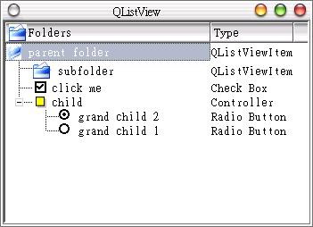

QCheckListItem類別是QListViewItem的子類別，它可以顯示三種不同的Item，如下所示：
QCheckListItem::RadioButton
QCheckListItem::CheckBox
QCheckListItem::Controller
其中RadioButton的父節點必須是一個Controller，否則RadioButton的互斥效果就會失效。
下面這個程式綜合QListView、QListViewItem與QCheckListItem來展示，並示範如何在按下某個項目後，更換Item的資料夾圖示。
首先請編輯checklists.h：
#ifndef QCHECK_LIST
#define QCHECK_LIST
#include <qlistview.h>
#include <qpixmap.h>
class ListView : public QListView {
Q_OBJECT
public:
ListView();
protected:
QListViewItem *folder, *subfolder;
QPixmap close, open;
bool subfolderOn;
protected slots:
void clicked1(QListViewItem*);
void clicked2(QListViewItem*);
};
#endif
然後是checklists.cpp：
#include "checklists.h"
#include <qiconset.h>
ListView::ListView()
: close("folder.xpm"), open("folder_open.xpm") {
QCheckListItem *chklistitem1, *chklistitem2;
setCaption("QListView");
addColumn(QIconSet(close), "Folders");
addColumn("Type");
setColumnWidth(0, 230);
folder = new QListViewItem(this, " parent folder", "QListViewItem");
folder->setPixmap(0, open);
folder->setOpen(true);
subfolder = new QListViewItem(folder, " subfolder", "QListViewItem");
subfolder->setPixmap(0, close);
subfolderOn = false;
chklistitem1 = new QCheckListItem(folder,
"click me", QCheckListItem::CheckBox);
chklistitem1->setText(1, "Check Box");
chklistitem1 = new QCheckListItem(folder, "child");
chklistitem1->setText(1, "Controller");
chklistitem1->setOpen(true);
chklistitem2 = new QCheckListItem(chklistitem1,
"grand child 1", QCheckListItem::RadioButton);
chklistitem2->setText(1, "Radio Button");
chklistitem2 = new QCheckListItem(chklistitem1,
"grand child 2", QCheckListItem::RadioButton);
chklistitem2->setText(1, "Radio Button");
setTreeStepSize(30); // 與父節點的距離，default是20pixel
setSorting(0, false);
sort();
connect(this, SIGNAL(clicked(QListViewItem*)),
this, SLOT(clicked1(QListViewItem*)));
connect(this, SIGNAL(doubleClicked(QListViewItem*)),
this, SLOT(clicked2(QListViewItem*)));
}
void ListView::clicked1(QListViewItem *item) {
if(item == subfolder) {
subfolderOn = !subfolderOn;
item->setPixmap(0, subfolderOn ? open : close );
}
}
void ListView::clicked2(QListViewItem *item) {
if(item == folder)
item->setPixmap(0, item->isOpen() ? open : close);
}
最後是main.cpp：
#include "checklists.h"
#include <qapplication.h>
int main(int argc, char **argv) {
QApplication app(argc, argv);
ListView *piv = new ListView();
app.setMainWidget(piv);
piv->show();
return app.exec();
}
基本上這個程式在邏輯與配置上並不難，主要在於判斷發生Signals時，是哪一個Item發出的就可以了，這使用if(item == subfolder)或if(item == folder)來判斷。
以下是程式的執行結果畫面：

|
|